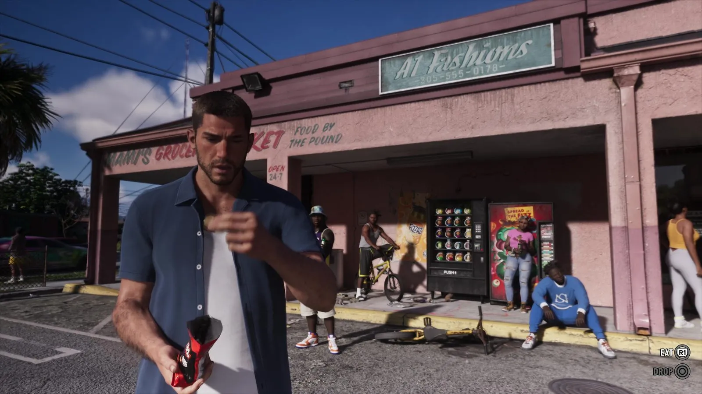
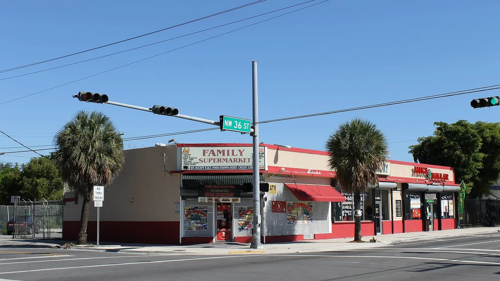
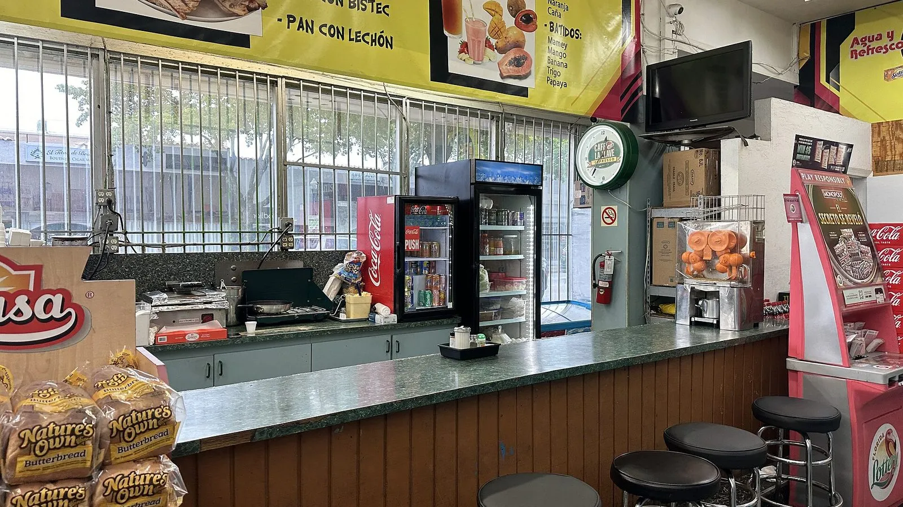

Mami’s Grocery Market и латинские бодеги Майами
Опубликовано:
Такой магазин узнаёт любой, кто был в Майами: одноэтажная коробка у дороги, яркая вывеска, торговые автоматы и люди у входа. Но Mami’s Grocery Market — вымышленный магазин с собственным названием, конкретный прототип Rockstar не называла. Тип заведения реальный, само место придумано.


- Mami’s Grocery Market — небольшой магазин в одноэтажном розовом здании; на вывеске «Food by the pound» (еда на развес) и «Open 24/7».
- Рядом в том же здании — магазин одежды A1 Fashions; номер на его вывеске начинается с 305 — это реальный телефонный код Майами.
- В испаноязычных районах США такой магазинчик называют бодегой (исп. bodega — лавка).
- В округе Майами-Дейд латиноамериканцы — около двух третей жителей, и бодеги здесь на каждом углу.
Что в игре
В «Расширенном показе» GTA 6 Джейсон стоит с пачкой чипсов у одноэтажного розового здания. На фасаде — вывеска Mami’s Grocery Market, рядом надписи «Food by the pound» и «Open 24/7». Под навесом — торговые автоматы, велосипеды, люди сидят прямо у стены. На том же здании вторая вывеска — A1 Fashions с телефоном.
Название говорит само за себя: «Mami» — ласковое обращение в испанском языке. Так Rockstar сразу показывает, что магазин семейный и латиноамериканский.
Что в реальности
В испаноязычных районах США — в Нью-Йорке, Майами, Хьюстоне — маленький продуктовый магазин у дома называют бодегой. В Майами это обычно одноэтажное здание у дороги, часто в паре с другими лавками: продукты, напитки, лотерея, иногда кафе-стойка с горячей едой.
По переписи 2020 года латиноамериканцы — около 69% жителей округа Майами-Дейд. Поэтому вывески на испанском, кубинский кофе и стойки с бутербродами в бодегах Литл-Гаваны, Аллапатты и Хайалиа — обычная часть города, а не экзотика.

Телефон на вывеске A1 Fashions в игре начинается с 305 — это настоящий код Майами-Дейд, который в городе стал частью местной идентичности. А вот вторая часть номера, 555, — классический вымышленный номер из американского кино и игр.
Совпадает и отличается
| Реальность | GTA 6 | |
|---|---|---|
| Тип заведения | Бодега — маленький латинский магазин у дома | 🟢 Да |
| Здание | Одноэтажное, у дороги, рядом другие лавки | 🟢 Да |
| Код 305 на вывеске | Реальный код Майами | 🟢 Да |
| Название | — | 🟡 Своё, вымышленное |
| Конкретный прототип | — | 🟡 Не назван Rockstar |
Источники: Rockstar Games — «Расширенный показ» GTA 6 (официальное видео); U.S. Census Bureau — перепись 2020, округ Майами-Дейд; Википедия — Bodega (store), Area code 305; Wikimedia Commons — фото Phillip Pessar (CC BY 2.0).
Реальные фото: Фото: Phillip Pessar from Miami, USA, CC BY 2.0 · Wikimedia Commons; Фото: Phillip Pessar, CC BY 2.0 · Wikimedia Commons. Кадры игры: Rockstar Games.
Каждый день — одно сравнение: кадр игры рядом с реальным фото. Подписывайтесь:
YouTubeInstagramTikTok
 vs
vs
 vs
vs
 vs
vs